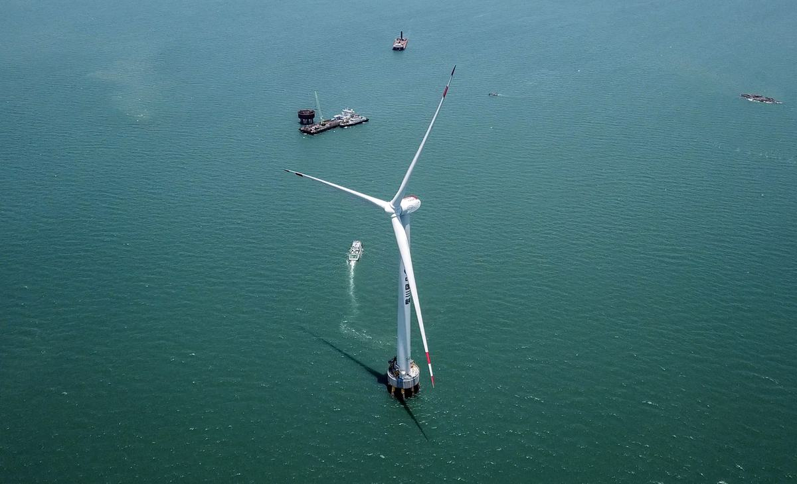

我国面临着严重的环境污染问题，市场对环保的新能源发电需求很大。风力发电是可再生能源领域中技术最成熟、最具规模开发条件和商业化发展前景的发电方式之一。我国海上风电资源丰富，海上风电发展得到了政府大力支持，2019年中国海上风电累计装机达423万千瓦，预测在2023年中国海上风电累计装机容量将突破千万千瓦，达到1067万千瓦，未来几十年，风电作为清洁能源会得到大力发展。目前国内主流海上机组功率在6-7MW左右，10MW级别风电机组技术均被国外公司掌握。东方风电10MW海上风力发电机组攻破了10MW大型海上风电研制关键瓶颈，实现了我国大兆瓦级风力发电机自主品牌的历史性突破。机组设计充分考虑了整机可靠性、安全性、经济性和工艺性。攻克了长叶片气弹、碳纤维工艺、大型发电机设计、双驱变桨系统等技术难题，整机研发达到世界先进水平。10MW海上风电机组拥有完全自主知识产权，是当今亚洲投运单机容量最大、叶轮直径最长的抗台风型海上风电机组，历史性的将中国风电引进“两位数时代”。未来在此平台将开发12MW机组，继续创造历史。
该机组荣获2019年度全球“最佳海上风电机组铜奖”，是中国唯一一款跻身该项榜单前三的产品，与其配套的10MW永磁直驱传动系统、碳纤（碳玻）混合90米长叶片分别荣获2019年度全球最佳传动系统第三名、最佳叶片第四名，是中国唯一获得该两项荣誉的产品。该机组目前已申请专利8项，授权专利4项。10MW风电机组已成功并网发电，运行稳定，振动、噪音均在标准范围内。10MW样机投运后短短数月就中标30万千瓦批量订单，销售额近20亿元，预计2021年将全部装机。海上风电市场广阔，巨大的装机量将带来整机设备以及安装、运维广阔的市场空间，极大的带动相关人员就业。其中设备端：海上风机、海上基础架、海缆需求将出现巨大的增量需求，而安装运维端由于国内海上安装船只相对匮乏，专业的安装运维人员相对稀缺，也将催生巨大的市场空间。 风力发电在缓解能源紧张、节能减排、改善气候条件等许多方面都有显著的效益。“高效、低碳、环保”已成为全球经济发展的新潮流，大容量、高效率、环保型发电设备已是电力装备行业发展趋势，10MW风机的应用将为减少碳排放作出突出贡献。10MW风机在年平均10米/秒的风速条件下，一台机组每年可以输送出4000万度清洁电能，可实现燃煤消耗减少13000吨，减少二氧化碳排放3500吨。
10MW海上风力发电机组，采用先进传动链结构形式，配备直驱永磁+全功率变频+双回路电气方案。基于东方电气在大型发电设备60年技术沉淀，针对中国福建、广东海域I类风区专门设计，具备超强抗台风能力，在确保高稳定性和高可靠性的前提下，有效降低用户的成本，为客户提供经济可靠的解决方案。 1、 超强的发电能力 超大功率10MW搭配超长185m风轮直径，发电能力远优于同等级机组，更大的叶轮直径有利于捕获更多的风能；在平均风速为10米每秒的I类风区，机组年等效满发小时数可达到4000小时，具备较好的经济性能；采用中压电气主回路方案，整体电气回路效率比低压系统高1~3%；电气系统采用双回路设计，单一回路出问题时可保障半功率运行，提升无故障运行时间；具备功率柔性控制，充分挖掘电气系统能力，使发电量增加3%。 2、 极高的可靠性系统设计 机组采用直驱技术路线，传动链短，且无高速旋转部件，极大减少传动链故障率；采用双驱电动变桨，有效降低变桨轴承齿面磨损，延长轴承寿命；机组采用全密闭结构及环境调节设计，具有超强耐盐雾腐蚀性能，可靠性高；机组关键部件、器件采用冗余设计，保障机组安全运行。3、国内首创、全球领先的双驱电动变桨系统首创电动变桨双驱方案，填补了我国自主品牌双驱电动变桨系统的空白，双驱电动变桨可效解决大型机组单驱驱动能力不够、齿面受力不均匀问题，有效降低变桨轴承齿面磨损风险，延长轴承寿命。国内首创的单轴双驱动方案，即每支叶片由两个驱动器分别控制两个变桨电机进行调桨，相较于液压变桨有技术成熟、无漏油风险、经济性好、免维护等优点。通过同步控制、载荷分配、转速限幅等技术手段，实现两个驱动器的同步控制，解决齿轮均衡受力的问题，能有效减小对变桨轴承的冲击，提高变桨系统可靠性和整机性能。创造性的设计了双驱抱闸冗余控制方案，实现主、从驱动器均可以控制释放两个电机的抱闸，通过控制电路冗余设计，解决传统一对一抱闸控制带来的系统安全隐患。独创驱动器安全保护方案，在同轴的任何一个驱动器发生致命故障无法动作时，另一个驱动器均能驱动叶片回到安全位置，提高机组安全性。3.1独有的变桨系统多冗余安全链设计，可靠性高 变桨系统安全保护采用内部安全链和外部安全链结构。外部安全链对应风机主安全链（主控EFC）回路，进行硬件紧急停机控制。内部安全链独立于风机主安全链回路对应变桨滑环超速保护、驱动器安全信号、软件看门狗等可能导致严重后果的故障点进行监控。无论是内部安全链还是外部安全链故障，变桨系统驱动器急停信号均能被触发，完成独立顺桨，实现紧急停机。同时，变桨系统还具备软件安全链设计，风机主控与变桨控制器、以及变桨控制器与三个驱动器之间，均设计有软件触发变桨系统急停指令的设计。 3.2独有的滑环超速保护设计，保证机组安全收桨 具有国家发明专利的滑环超速保护设计，通过滑环测速探头，将滑环的转速信号接入变桨系统内的超速继电器，超速继电器触点接入变桨系统硬件安全链，作为风力发电机组的最后一道超速冗余保护设计，从根本上杜绝风力发电机组发生超速故障。 4、 先进的电控系统设计 4.1可靠的安全系统设计 对安全链进行了分级设计，安全链达到GL标准中规定的PLd等级。该安全链的特点为将安全链分为人身级、偏航级及设备级共三级，当触发人身级安全链时从硬件上停止风机所有设备的运转，最大程度的保证人员和机组的安全。 4.2优良的硬件扩展性 为了应对风力发电机组全寿命周期内的技术进步带来的新的技术要求与技术改造，主控系统硬件设计时，充分考虑了硬件的可扩展性，预留一定的安装位置与信号接口；另一方面，集成箱变监控系统、消防系统、水冷系统等辅助系统，最大限度降低辅助系统对主控通用化、平台化设计的影响。 4.3关键传感器冗余 外围执行器件冗余:主控外围影响停机的传感器采用冗余方案，轴承温度、绕组温度、液压站压力、偏航控制器、超速反馈等，对成本可控的关键执行机构也采用冗余方案，比如冷却水泵、冷却风扇等、液压站油泵等等。主控系统电源冗余:当电网掉电后可通过后备电源供电，提供偏航所需控制用电。关键传感器冗余设计:对于影响机组安全运行的关键传感采用冗余设计。 4.4台风控制策略研发了适合中国海上风电机组的抗台风策略，在控制系统中增加抗台风运行模式，配合东方抗台风控制算法，结合智慧风电机组的监测系统，对台风中心附近最大风速、移动方向、影响范围等信息进行实时跟踪及预测分析，并以此为依托根据具体的机位分布情况，实时调整机组抗台风控制策略，保障机组安全，有效降低塔筒和基础载荷约20%，节省塔筒和基础成本。 5、 先进发电机设计自主研制的永磁直驱风力发电机，成功突破了万千瓦级海上风力发电机轴系、密封结构、电磁绝缘、通风冷却等关键核心技术，搭建了万千瓦级风力发电机设计平台，在发电机设计时充分考虑了绝缘、电磁、通风、结构等方面设计的先进性和可靠性，发电机采用空冷系统，安全可靠，有效防止沙尘、盐雾和水汽对发电机的侵蚀，保护电机绕组和磁钢，保证电机长期安全运行。在电气部分，针对风电的特殊工况，形成了风电专用的绕组绝缘及检测规范。5.1高可靠性在传动链上，选择最稳定可靠的两点支撑、单列圆锥滚子轴承结构，两个单列圆锥轴承容易施加预紧力，能有效提高轴承承载能力和寿命，安全性高。发电机的心脏部件永磁体采用可靠的模块化封装结构，防范磁钢掉落风险，并使其与盐雾恶劣环境多重隔离。采用多种技术手段防范磁钢发生不可逆退磁，选用直驱电机行业内最高性能等级的高矫顽力永磁体，从通风结构上优化永磁体的工作环境，从电磁性能上避免永磁体及周边的振动，从防振动失磁、防热失磁、防短路失磁等方面均采取了多项措施，确保发电机安全可靠运行。 5.2高性能及高发电量 发电机选用高剩磁、高磁能积的永磁体，优选的结构长径比、气隙选取、通风结构，提高了发电机的功率密度和效率，发电机的额定效率94.5%，在很宽的转速范围段，发电机的效率可高达96%。 6、 优异的叶片设计叶片创新性的采用碳纤维主梁和副梁双主梁结构，提高了叶片刚度、强度和抗扭转破坏能力，攻克目前世界上最宽最厚的碳纤维灌注工艺等世界性难题；建立叶片外形和结构的参数化模型和考虑气弹效应的叶片参数化模型，进行抗颤振型柔性叶片协同优化，形成考虑气动、结构、可靠性的一体化设计技术，成为解决超长柔性叶片设计困难的关键技术，设计的叶片相比纯玻纤叶片，可大幅降低机组载荷及叶片重量，叶片重量降低30%，各部件极限载荷最大下降约20%，疲劳载荷最大下降约30%；6.1叶片气动性能优异 叶片采用了国际先进的具有高升阻比，粗糙度敏感性低、动态特性平缓等特性的钝尾缘翼型，有效提高了叶片的气动性能.与普通翼型相比，钝尾缘翼型叶片，既可提高约2%的功率，钝尾缘翼型的应用也提高了叶片后缘结构的安全性。 6.2叶片结构安全可靠 叶片材料为碳纤维/玻璃纤维增强环氧树脂复合材料，采用真空灌注工艺成型，纤维增强树脂复合材料具有密度小、强度高、疲劳性能好的特点，具有良好的耐腐蚀性，在酸、碱、有机溶剂及海水等介质中性能稳定。 7、 优异的电气系统设计 创新电气主回路系统，采用双绕组发电机+双路变流器+三绕组变压器方案，在机侧、网侧中均实现双回路的电气隔离，可有效抑制环流、共模电流，并消除了不均流现象，可利用三绕组变压器自身特点，有效消除变流器产生的高频谐波，实现系统最优。7.1 双回路电气系统 发电机采用双绕组设计、变流器采用两个变流器并联、变压器采用三绕组变压器，单一回路出问题，另外一回路还可继续运行，这样可以提高机组可利用率，提高无故障运行时间，提高发电量。 7.2中压电气系统 变流器采用3300V电压等级，对比690V电压等级的变流器，在相同的整机容量下，机侧及网侧电流减少80%，功率线缆数量实现大幅减少，有效解决了电缆数量过多带来的风机扭缆问题； 变流器采用三电平拓扑结构：系统主回路采用NPC型三电平拓扑结构，提高了输出PWM波形的电平数。输出相同电压等级下，对比两电平方案，三电平拓扑的变流器网侧谐波性能更好，对电机的绝缘设计更友好，变流器效率可以达到98.3%，比普通690V变流器高1%到3%左右；7.3 孤岛运行方案国内首次实现孤岛运行功能，机组与电网断开情况下，单台风机由后备电源为辅电设备供电，风机自启动发电，为机组关键负荷提供持续稳定的电能，实现风机孤岛运行；在电网恢复时，机组无缝切换到并网运行。孤岛运行可以在电网条件不具备时，提前完成新机组动态调试，确保电网接入后快速并网发电；风机辅助设备可以在风场断电期间正常运行，保障在恶劣风况下机组的安全、可靠；可以实现大孤岛运行方式，孤岛运行风机为附近风机供电，保障附近风机在断网情况下正常调试、运维。 8、 先进的智慧系统 智慧系统基于逻辑自适应和参数自寻优的智能控制，能有效提升单机发电量和可利用率；基于多项智能感知，精准的识别风机状态，包含高频振动传感、叶片状态传感、机舱环境及噪音、雷击监测、塔筒及塔基传感等；基于定工况先进数采策略、丰富数据分析能力的在线状态监测系统，准确监测机组大部件状态，同步自动生成状态监测报告；基于对运行过程中多源数据的AI算法建模和预测分析，实现对风电装备预测性诊断；基于预测性诊断和智能排程算法实现的智能运维体系，有效降低风机运维成本。9、先进的创新管理经验利用内部资源进行协同攻关，各个部门进行协同设计开发，确保整个项目有序开展。打破部门壁垒，组建涵盖整个研制过程的团队，对整机及各子系统制定详细的计划、对状态进行跟踪。整机的设计除采用正常竖向设计流程加部件设计的横向设计，节省开发周期。梳理设计中技术难点，通过专项技术攻关，实现各个突破，最终确定整机技术方案。



10MW 海上风力发电机组,海上风电大型化
风机的工业美学
清洁能源服务双碳与民生
海上风电装机千亿级市场
「海上大风车」绿色能源符号